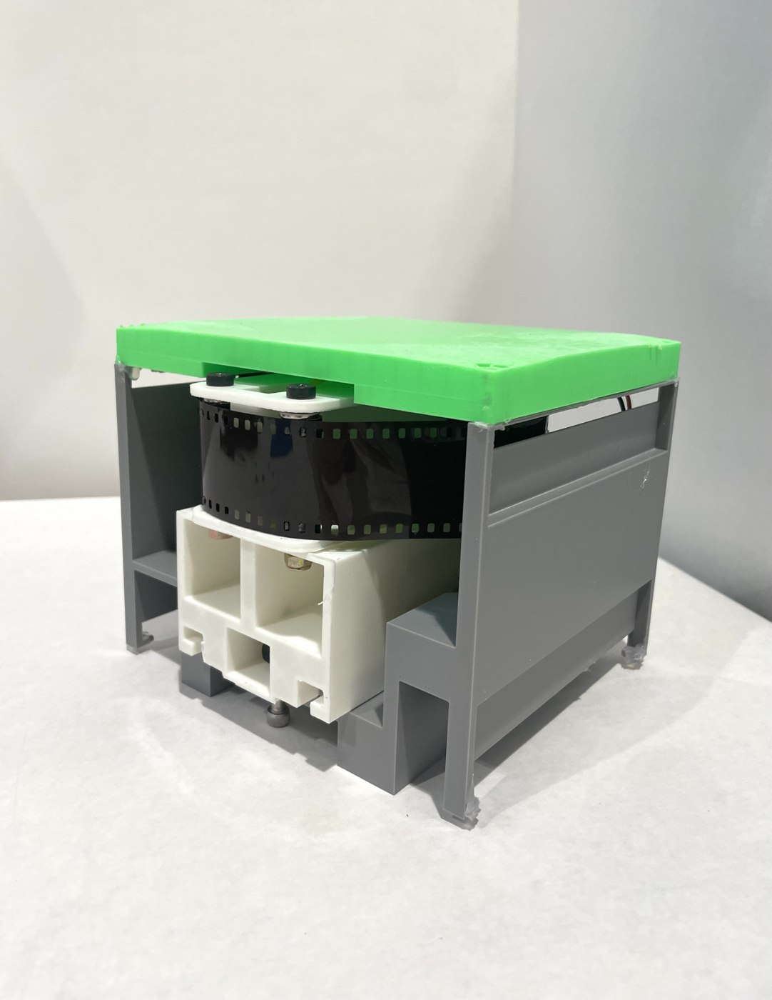
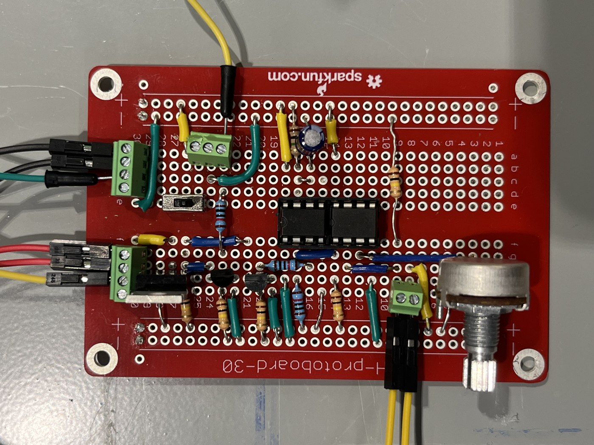
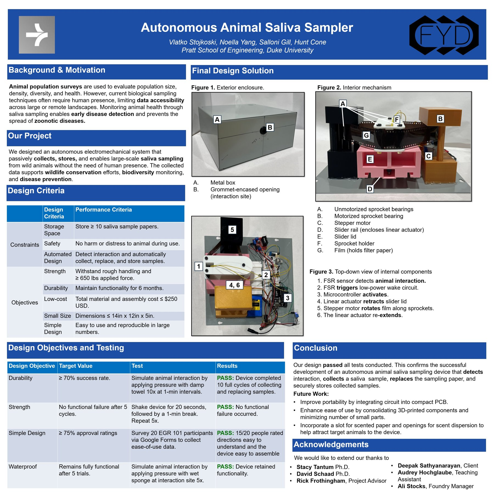

Autonomous Animal Saliva Sampler
EGR 101, FIRST YEAR DESIGN · DUKE UNIVERSITY

About
A first year design project with three teammates: build a box that can collect an animal's saliva without a person anywhere nearby, and do it well enough to actually help track wildlife disease.
Team
Vlatko Stojkoski, Noella Yang, Salloni Gill, Hunt Cone
The premise
Our client wanted a way to monitor wildlife health across large or remote areas without needing a person physically present to collect a sample. Saliva turns out to be a genuinely useful way to catch early signs of disease in an animal population, but the current methods for getting it basically require someone to be standing there. So the four of us set out to build a box that would do it for us.
How it actually works
Picture a small gray box with one grommet lined hole. An animal noses or licks at that opening, and underneath it sits a force sensitive resistor that registers the contact. That trigger wakes up a microcontroller, which retracts a slider lid, exposing a strip of filter paper mounted on old camera film for the sample to land on. Once collected, a stepper motor rotates the film forward along a sprocket to the next fresh section, and a linear actuator re-extends the slider to seal everything back up. Ten of those sections meant we could store at least ten samples before anyone needed to come empty it.

Underneath all of that mechanical motion was a breadboard's worth of electronics doing the actual sensing and control. This was the part I was most hands on with: reading the FSR, debouncing that signal into a clean trigger, and sequencing the actuator and stepper motor so they never fought each other.

Testing it like we meant it
We were not going to hand this to an evaluator and just hope it worked, so we put it through a set of tests that were more entertaining to run than they sound on paper. We simulated ten animal interactions with a damp towel at one minute intervals to check the collect and replace cycle held up. We shook the whole device for 20 seconds at a time, five times over, to make sure nothing rattled loose. We pressed a wet sponge against the interaction site five separate times to check it would survive actual weather. And because a client requirement was that it survive rough handling, we applied 650 pounds of force to it just to see it hold.
It passed everything. Ten full collection cycles, no functional failure after the shake test, fully functional after the wet sponge test, and it held up under the strength test with no issues. We also ran a small usability survey with 20 of our EGR 101 classmates, and 15 of them found the directions easy to follow and the device easy enough to put together themselves.
The Pratt Fair
We presented the finished project at the Pratt Fair alongside a poster that walks through the full design, from the background and motivation down to every test result. If you want the more formal version of the story, it's below. If you'd rather just watch the device actually take a sample, there's a demo video of the whole thing in action.

Looking back
If we kept going, the top of the list would be getting the whole circuit onto one compact PCB instead of a breadboard tangle, cutting down the number of separate 3D printed parts so it's easier to assemble, and adding a slot for scented paper to actually help attract the animals we're trying to sample from in the first place.